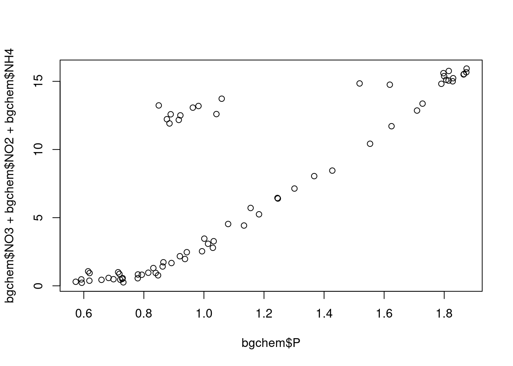

library(tidyverse)Literate Analysis
Intro
About this data
Abstract: (University Of Texas At El Paso 2018)
This data set contains North Pole Environmental Observatory Bottle Chemistry data. This data set includes diverse measurements of seawater chemistry along with supporting conductivity, temperature, and depth (CTD) data from the Arctic Ocean near the North Pole. Measurements were taken from sea ice platforms each April or May from 2000-2014. Investigators used a CTD-O2 system to measure seawater conductivity, temperature, depth, and dissolved oxygen content, and collected Niskin bottle samples for measurements of salinity, oxygen isotopes composition, total alkalinity, and concentrations of phosphate, silicic acid, nitrate, nitrite, ammonium, and barium. The available in-situ dissolved oxygen measurements were collected beginning in 2002. Beginning with the 2007 deployment, an in-situ ultraviolet spectrophotometer (ISUS) was used to measure nitrate concentrations in the water column. The North Pole Environmental Observatory (NPEO) is a year-round, scientific observatory, deploying various instruments each April in order to learn how the world’s northernmost sea helps regulate global climate. Supported by repeat hydrographic profiles, it includes a set of unmanned scientific platforms that record oceanographic, cryospheric, and atmospheric data throughout the year. More information about the project is available at the project web site: http://psc.apl.washington.edu/northpole.
Setup
Read data
download.file(
url = "https://arcticdata.io/metacat/d1/mn/v2/object/urn%3Auuid%3A35ad7624-b159-4e29-a700-0c0770419941",
destfile = "bgchem2008data.csv")bgchem <- read_csv("bgchem2008data.csv")Exploring data
bgchem %>%
head()# A tibble: 6 × 19
Date Time Station Latit…¹ Longi…² Targe…³ CTD_D…⁴ CTD_S…⁵
<date> <dttm> <chr> <dbl> <dbl> <dbl> <dbl> <dbl>
1 2008-03-21 1899-12-31 21:56:46 73N,14… 73.0 -140. 20 15.1 26.1
2 2008-03-21 1899-12-31 21:56:46 73N,14… 73.0 -140. 60 60.6 29.2
3 2008-03-21 1899-12-31 21:56:46 73N,14… 73.0 -140. 85 85.7 31.4
4 2008-03-21 1899-12-31 21:56:46 73N,14… 73.0 -140. 190 191. 33.1
5 2008-03-21 1899-12-31 21:56:46 73N,14… 73.0 -140. 310 309. 34.6
6 2008-03-22 1899-12-31 21:45:27 72N,14… 72.1 -140. 20 21.0 26.2
# … with 11 more variables: CTD_Temperature <dbl>, Bottle_Salinity <dbl>,
# d18O <dbl>, Ba <dbl>, Si <dbl>, NO3 <dbl>, NO2 <dbl>, NH4 <dbl>, P <dbl>,
# TA <dbl>, O2 <dbl>, and abbreviated variable names ¹Latitude, ²Longitude,
# ³Target_Depth, ⁴CTD_Depth, ⁵CTD_Salinityglimpse(bgchem)Rows: 70
Columns: 19
$ Date <date> 2008-03-21, 2008-03-21, 2008-03-21, 2008-03-21, 2008-…
$ Time <dttm> 1899-12-31 21:56:46, 1899-12-31 21:56:46, 1899-12-31 …
$ Station <chr> "73N,140W", "73N,140W", "73N,140W", "73N,140W", "73N,1…
$ Latitude <dbl> 73.02083, 73.02083, 73.02083, 73.02083, 73.02083, 72.0…
$ Longitude <dbl> -139.8885, -139.8885, -139.8885, -139.8885, -139.8885,…
$ Target_Depth <dbl> 20, 60, 85, 190, 310, 20, 60, 85, 190, 310, 430, 20, 6…
$ CTD_Depth <dbl> 15.1270, 60.5559, 85.7471, 191.4073, 309.2524, 20.9588…
$ CTD_Salinity <dbl> 26.0658, 29.1798, 31.4023, 33.1268, 34.6233, 26.1788, …
$ CTD_Temperature <dbl> -1.42300, -0.93431, -0.14583, -1.47750, 0.25782, -1.40…
$ Bottle_Salinity <dbl> 26.06580, 29.17980, 31.40230, 33.12680, 34.62330, 26.1…
$ d18O <dbl> -3.53176972, -3.18565098, -2.10872671, -1.42934554, 0.…
$ Ba <dbl> 72.40000, 82.84798, 60.55257, 76.13382, -99.00000, 70.…
$ Si <dbl> 2.45990, 2.82420, 7.54360, 36.57680, 8.06340, 2.78200,…
$ NO3 <dbl> -0.0311, 0.0260, 2.6964, 15.8538, 12.1601, 0.0480, 0.3…
$ NO2 <dbl> 0.05620, 0.17255, 0.02170, 0.02460, -0.00130, 0.04820,…
$ NH4 <dbl> 0.19740, 0.05575, 0.06910, 0.05910, 0.06530, 0.37390, …
$ P <dbl> 0.59340, 0.73175, 1.02980, 1.87450, 0.87670, 0.59190, …
$ TA <dbl> 1895.20, 2094.50, 2194.20, 2268.40, 2296.50, 1902.90, …
$ O2 <dbl> 9.2460, -99.0000, -99.0000, -99.0000, 6.6560, 9.1860, …Analysis
Calc summary stats
bgchem %>%
select(NO3, NO2, NH4, P) %>%
summary() NO3 NO2 NH4 P
Min. :-0.0499 Min. :-0.00130 Min. :0.00535 Min. :0.5732
1st Qu.: 0.7849 1st Qu.: 0.01285 1st Qu.:0.01603 1st Qu.:0.7986
Median : 4.7488 Median : 0.02475 Median :0.03465 Median :0.9725
Mean : 6.8571 Mean : 0.04766 Mean :0.05853 Mean :1.1201
3rd Qu.:13.0425 3rd Qu.: 0.04469 3rd Qu.:0.06747 3rd Qu.:1.4956
Max. :15.8538 Max. : 0.27300 Max. :0.37390 Max. :1.8745 Calc mean redfield ratio
# get mean of each of these columns (of molecules in redfield ratio)
means <- bgchem %>%
select(NO3, NO2, NH4, P) %>%
map(., mean)
ratio <- (means$NO3 + means$NO2 + means$NH4)/means$Pplot redfield ratio
plot(bgchem$P, bgchem$NO3 + bgchem$NO2 + bgchem$NH4)
Conclusion
The value is 6
References
University Of Texas At El Paso. 2018. “North Pole Environmental Observatory Bottle Chemistry.” Arctic Data Center. https://doi.org/10.18739/A25T3FZ8X.